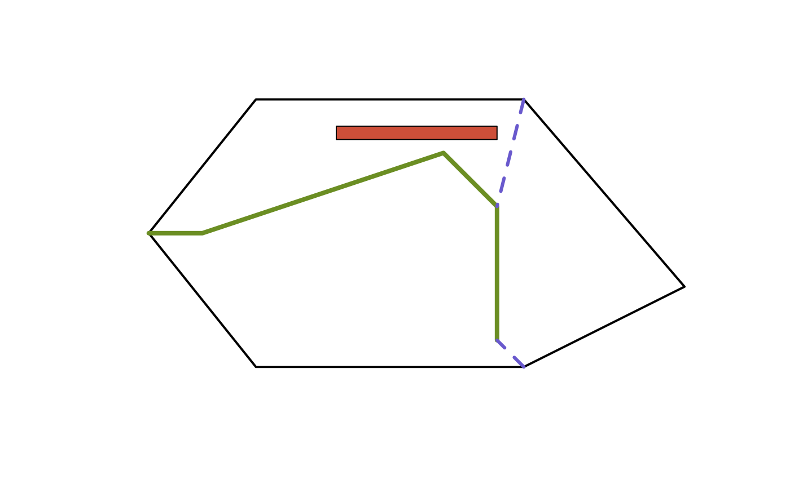

Connect a sf LINESTRING object to border nodes of an sf POLYGON object
desplim_connect_border.RdCompute the optimal connections between nodes of a sf
LINESTRING object and border nodes of a sf POLYGON object based on user
input.
Usage
desplim_connect_border(
input_linestring,
input_polygon,
input_buildings = NULL,
distance_intersect = 500,
distance_nodes = 250,
minimum_angle = 30,
num_candidates = 3
)Arguments
- input_linestring
object of class sf of type LINESTRING or MULTILINESTRING.
- input_polygon
object of class sf of type POLYGON.
- input_buildings
object of class sf of type POLYGON or MULTIPOLYGON. Contains elements which should not overlap with output border connetions. Default is
NULL.- distance_intersect
numerical; the minimum distance from exsting intersections of
input_linestringand the border ofinput_polygonfor a border node ofinput_polygonto be considered for a new connection. Default is 500 units.- distance_nodes
numerical; maximum distance from the border nodes of
input_polygonto for a node ofinput_linestringto be considered for a new connection. Default is 250 units.- minimum_angle
numerical; minimum angle between a new connection and the border of
input_polygonrequired for the new connection to be c onsidered. Default is 30 degrees.- num_candidates
numerical; number of connections to attempt for each border node. Default is 3.
Value
An sf object of type LINESTRING connecting nodes in
input_linestring to border nodes of input_polygon.
Details
For each candidate border node, num_candidates candidate
connections are generated. Only candidate connections which meet the
requirements of minimum_angle, are fully covered by the input polygon and
do not cross any existing linestrings are selected. The border node closest
to an existing intersection is considered first. If more than one valid
connection for the border node is found, the shortest connection is selected
and the set of other candidate border nodes is updated to exclude those who
are within distance_intersect of the new connection. If no valid connection
for the border node exist, the border node is removed from the set of
candidate border nodes.
Examples
# Create input polygon
poly_coords <- list(matrix(
c(0, 0, 10, 0, 16, 3, 10, 10, 0, 10, -4, 5, 0, 0),
ncol = 2,
byrow = TRUE
))
input_poly <- sf::st_sf(
geometry = sf::st_sfc(sf::st_polygon(poly_coords), crs = 32612)
)
# Create input linestring
line_coords <- matrix(
c(-4, 5, -2, 5, 7, 8, 9, 6, 9, 1),
ncol = 2,
byrow = TRUE
)
input_line <- sf::st_sf(
geometry = sf::st_sfc(sf::st_linestring(line_coords), crs = 32612)
)
# Create input building(s)
building_coords <- list(matrix(
c(3, 9, 9, 9, 9, 8.5, 3, 8.5, 3, 9),
ncol = 2,
byrow = TRUE
))
input_build <- sf::st_sf(
geometry = sf::st_sfc(sf::st_polygon(building_coords), crs = 32612)
)
# Function call
border_connections <- desplim_connect_border(
input_linestring = input_line,
input_polygon = input_poly,
input_buildings = input_build,
distance_intersect = 3, # Small for example
distance_nodes = 5, # Small for example
minimum_angle = 30,
num_candidates = 3
)
# Visualisation
plot(sf::st_geometry(input_poly), border = 'black', lwd = 2)
plot(sf::st_geometry(input_build), col = 'tomato3', add = TRUE)
plot(sf::st_geometry(input_line), col = 'olivedrab', lwd = 4, add = TRUE)
plot(
sf::st_geometry(border_connections),
col = 'slateblue3',
lwd = 3,
lty = 2,
add = TRUE
)
